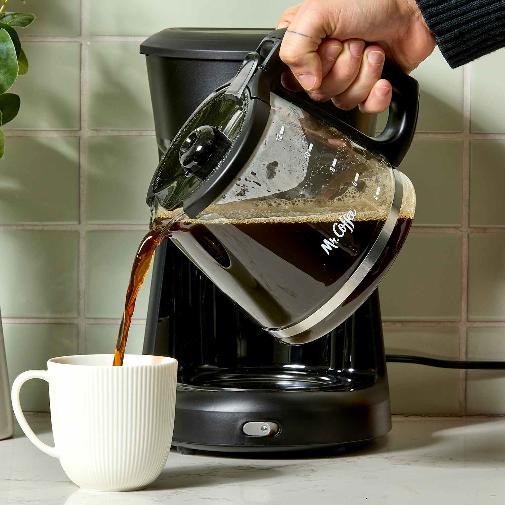

There are many ways to make coffee at home, each offering a different flavor and level of convenience. Drip coffee makers are popular for their simplicity and ability to brew multiple cups at once, while single-serve pod machines provide quick, consistent results. For more hands-on methods, pour-over brewers allow precise control over water flow and flavor, and French presses create a rich, full-bodied cup. Espresso machines and Aeropress devices cater to those who enjoy concentrated, café-style coffee, and cold brew makers let you steep grounds slowly for a smooth, refreshing drink.

Supplies For Making Simple Coffee At Home
Coffee Concentrate
Creamer
Sweetener
Modern Day Coffee Machines
Modern-day at-home coffee machines are designed to offer convenience, consistency, and café-quality results with minimal effort. Single-serve pod machines provide quick, mess-free brewing in a wide range of flavors, while drip coffee makers remain reliable for producing multiple cups at once. For enthusiasts, home espresso machines deliver rich, concentrated shots and allow for milk frothing to create lattes and cappuccinos. Many modern machines also feature programmable settings, built-in grinders, and smart technology integration, making it easy for anyone to enjoy customized coffee drinks at home.
Helpful Information When Considering Making Coffee At Home
The links provided help you if you are planning on setting up a coffee station at home, such as which method to use and perhaps what machine to purchase.